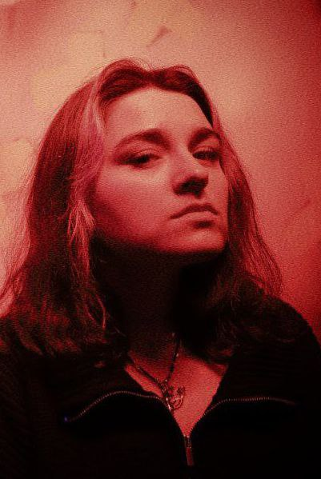
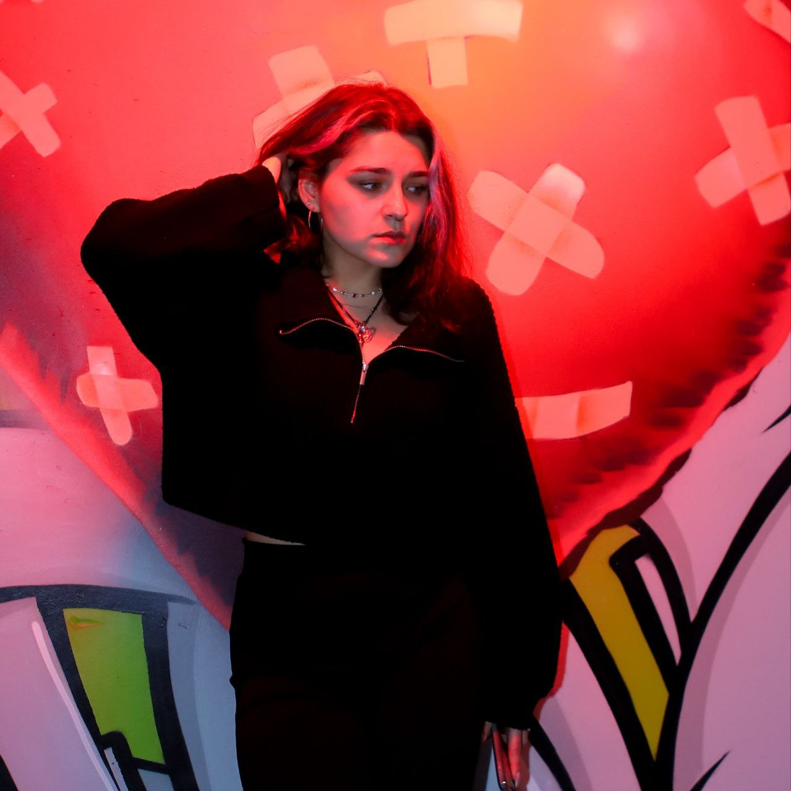
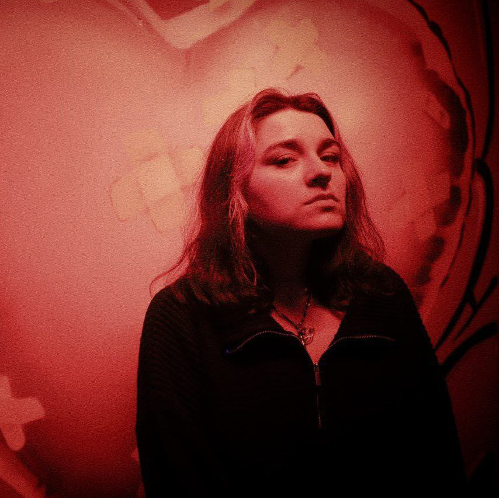

Балякина Карина Крафтолюбова
Люблю триллеры и детективы — они дают возможность почувствовать себя умнее, чем герои, хотя в жизни не всегда понятно, как настроить Wi-Fi. Обожаю фильмы, где мозг кипит, как чайник: 'Бойцовский клуб' учит, что проблемы решаются ударом в лицо (но только в фильме, в жизни так не работает), 'Лекарство от здоровья' напоминает, что иногда отдых важнее, чем карьера, а 'Евротур' — это путеводитель по тому, как не нужно путешествовать. И конечно, 'Гарри Поттер', ведь магия — это сила, даже если ты взрослый и уже платишь налоги. Если нужно обсудить сложные сюжетные повороты или просто поспорить, почему герои делают глупости, я всегда готова.

